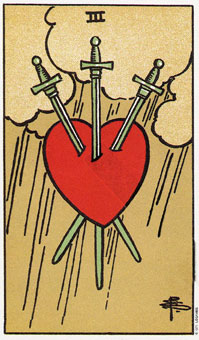

当宝剑三出现，请接受你的痛苦和悲伤。
宝剑三画的是，一颗心被三把交叉的剑刺穿过去，而背景则是风暴肆虐。这颗心是鲜红色的，和灰蒙蒙的云形成强烈对比。宝剑三暗示这悲伤、失落和哀痛。绝望和失望通经常会伴随着这张牌。有些人觉得这张牌说得太赤裸了，然而我们在生命的的某些时候都曾经历经悲伤和痛苦，这可以使我们变成熟、怜悯和包容别人。
当宝剑三这张牌出现时，可以预期你将遭遇某些痛苦。不要拒绝这份痛苦，因为如果你拒绝了，可能会导致感情上的停止或沮丧。如果你从内心的痛苦中退却的话，即冒着脱离生活，脱离周遭环境的危险。
许多疾病的根源可以追溯到拒绝痛苦。某些慢性的健康上的问题都可能和回避正常的痛苦，或不愿坦然接受生命中的种种伤心、悲伤或失望有关。
当这张牌出现时，你要知道：去体验你的悲伤是很重要的，因为在这么做的同时，你也扫除了障碍，让即将来临的机会可以接近你。记住，悲伤是会过去的。
大体上的意义
宝剑三代表的是，你正强烈的经验这悲伤和失落的一段时间。当出现这张牌时，内心的困惑、悲痛和沉重是很明显的，它表示强烈的失望。在有关健康方面的分析中，它可能暗示心脏方面的毛病。
几年前有位朋友来问我，他的一项事业计划未来发展性如何。计划中包括一位合伙人，为期四个月。答案是权杖六，这暗示成功，然而他又在六上面加了一张额外的牌――宝剑三。我们感到困惑，为什么一项成功的计划却是以失望收场呢?原来这项计划需要投入大量的工作，也得到不同凡响的成功，但他的合伙人却带着所有的好处一起消失了。
两性关系上的意义
宝剑三叙述的是两性关系上的痛苦和受伤。它所显现出来的几乎可说是一种令人难以承受的失落和悲伤。只要记住这使会过去的，重要的是要诚实的去体验它，不要压抑它。
倒立的宝剑伞在两性关系的分析中，可能是在强调过去未解决的痛苦，这痛苦是你无法在目前的情况中得到满足，这个过去可能是指现在这份关系中的过去，或早先的两性关系。为了保护自己不再受到进一步的伤害，你可能会在情感上和你身边的人保持一段距离。
倒立的宝剑三
当这张牌倒立时，表示你有着类似的痛苦，不过这次你会抗拒你的感觉。去否定或压抑痛苦及失落所需要的力量必定是从某处得到的，而且通常来自你用于谋生的力量。这份痛苦越大，要用来压制它的力量越大，而你所残留的卫生的力量就变得微乎其微了。
三的倒立可以代表你目前的事业被过去的痛苦所遮蔽了。或许当时你觉得被自己的情绪压得快喘不过起来了，而唯一的应对办法便是去压抑它们。在当时这个方法或许还管用，不过现在应该是找出另外办法的时刻了，也就是找出解决那些痛苦情绪的更适当的方式，否则哪些还没有被疏通的痛苦情绪永远在等着你。
例如，当罗丝玛丽的父亲去世时，她经历了很长的一段沉痛期。她发现自己所悲悼的父亲角色是童年时所未曾体会的。这是一种存在已久的悲伤，要充分的体验和释怀非一蹴可几。在童年时，她没有接受失去父亲的悲伤(她的父母亲在她五岁时就已离异)，而这份悲伤感在他去世时浮现出来。所以事实上，她是以一个成人及一个五岁大孩子的双重身份在追悼她的父亲。
三的倒立暗示没有能力接受痛苦或伤害，它告诉我们的是一种压抑痛苦，或逃避可能引起任何痛苦记忆的场合的项向。